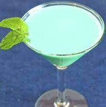

O Grasshopper é um cocktail cremoso e refrescante com sabor a menta e chocolate, perfeito como digestivo.
Método de Preparo
GuarniçãoNão aplicável, folha de hortelã opcional. |
 |
Philibert Guichet inventou a bebida que se tornaria conhecida como Grasshopper, para uma competição de cocktails em 1918 na cidade de Nova York. O cocktail de Guichet conseguiu o segundo lugar e tornou-se tão popular em casa em Nova Orleans, que mantém um lugar permanente no menu de cocktails do Tujague's desde então.